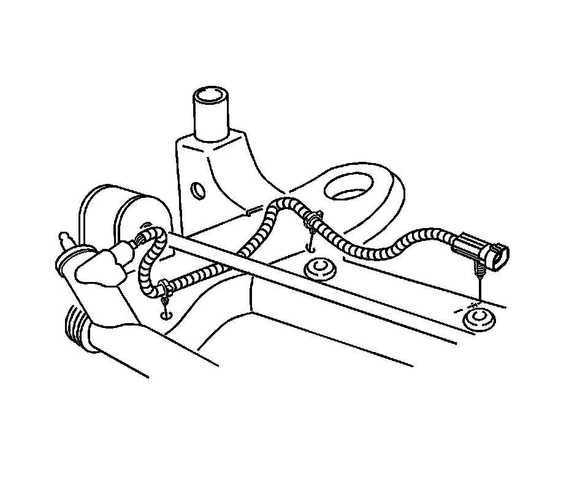
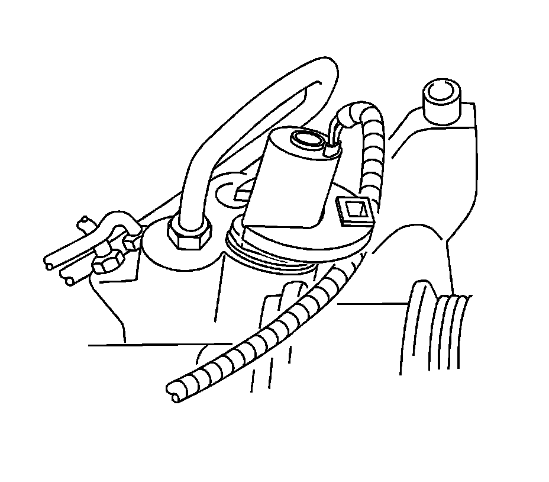

Power Steering Gear Solenoid/Actuator Replacement
Power Steering Gear Solenoid/Actuator Replacement
Removal Procedure
1. Remove the left front tire and wheel assembly. Refer to Tire and Wheel Removal and Installation (Service and Repair) .
2. Remove the front air deflector. Refer to Front Air Deflector Replacement (Service and Repair) .
3. Place drain pans under the vehicle as needed.

Important: Clean any dirt or debris from the power steering gear solenoid/actuator and wiring harness area. Do not get dirt on the lower portion of the solenoid/actuator below the hex, inside the solenoid/actuator port on the steering gear, or in the wiring harness electrical connector.
4. Disconnect the power steering gear solenoid/actuator wiring harness electrical connectors and remove the harness from the 2 plastic retainers.

5. Loosen the power steering gear solenoid/actuator from the steering gear with a counter clockwise rotation and remove it from the steering gear.
Installation Procedure
1. Ensure the power steering gear solenoid/actuator has 2 O-ring seals visible beneath the hex before installing it.
2. Install the power steering gear solenoid/actuator to the steering gear and tighten it with a clockwise rotation.
3. Connect the power steering gear solenoid/actuator wiring harness.
4. Connect the power steering gear solenoid/actuator wiring harness electrical connectors and secure the harness in the 2 plastic retainers.
5. Clean any excess power steering fluid from the vehicle and remove the drain pans.
6. Install the front air deflector. Refer to Front Air Deflector Replacement (Service and Repair) .
7. Install the left front tire and wheel assembly. Refer to Tire and Wheel Removal and Installation (Service and Repair) .
8. Fill and bleed the power steering system. Refer to Power Steering System Bleeding (Service and Repair) .